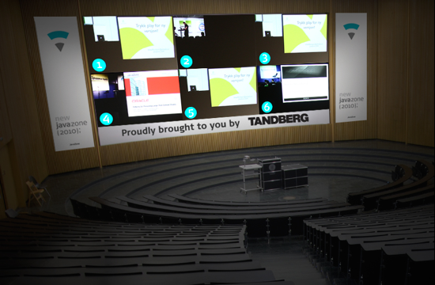

News
Panel debate: data retention directive
There has been quite an intense public debate regarding the Data Retention Directive (abbreviated DLD in Norwegian) for a while now. As this is a topic that many people in the Java community have strong opinions about we have decided to enable the JavaZone audience to take part in the debate as well. If you are wondering what DRD (DLD) is all about you should not miss this debate!
On the pro-DRD-side we two experts from the Norwegian FBI (Kripos): Reidar Brusgaard and Rune Utne Reitan. Their opponents are: Martin Bekkelund (Friprogsenteret) and Torgeir Waterhouse (IKT-Norge).
The debate will take place on the 8th of September in room 1, lead by Christer Gundersen from The National Center for Open Source Software (Friprogsenteret). Both sides will make an initial short presentation outlining their view on this issue, and then the debate will start. The audience will be able to ask questions to the debate participants.
We hope that this debate will give the audience a more facts-based view on the matter and enable the Java community to voice their opinion.
Read more here. Note that the debate will be held in Norwegian.
Panel debate: open public data
What kind of applications could you make with complete access to all national and governmental data sets? All the map data, all the statistical data or how about all the digital media content from the national broadcaster? This spring, the Norwegian government has put creative use of public sector data in focus with the launch of the data portal data.norge.no and the Nettskap 2.0 contest. For JavaZone 2010 we have invited some of the most active participants in the ongoing debate on public sector data to a panel debate!
We all agree that free use of public sector data is a good thing, but why are the governmental agencies so hesitant to publish their data? What is the potential in these data from a democratic and entrepreneurship point of view? In this debate both the data owners, represented by Fornyingsdepartementet (The Ministry of Government Reform) and Teknologirdet (Norwegian Board of Technology), and the data consumers, represented by Oslo Open Data Forum, come together to discuss what direction open public data in Norway is heading.
Maybe you'll get inspired to start a software project using public data? Or maybe you'll get involved in the movement to publish more public data?
The panel debate will be held in Norwegian, Thursday September 9th at 10:15 in room 4. Read more here.
JavaZone Goes Mobile!
javaBin, the community behind JavaZone, has made it even easier to figure out what's happening on the JavaZone program. We have recently published two mobile applications, one for Android and one for iPhone that are loaded with the current programme.
For more information about the programme application and on to download the applications, visit Incogito.
JavaZone will be streamed live in HD to NTNU Campus
For the first time in the JavaZone history, the entire event will be streamed live in HD to Campus Gløshaugen at NTNU in Trondheim.
JavaZone HD is a brand new concept which aims to involve students from Trondheim in the knowledge exchange made possible by JavaZone. The event is free for students to attend and the different speakers will be streamed simultaneously to one of auditoriums on campus. You will be able to choose which speaker you would like to listen to thru your headset.
javaBin, the organization behind JavaZone, aims to establish contacts and to promote exchange of knowledge, experience and views between those who are interested in Java technology. An important audience that has never been adequately involved in this objective is the students.
Together with our partner Tandberg, we want to involve and share knowledge with students in a much greater extent. We wish to set up a live stream in of all speeches in HD quality, where students can sit in same auditorium and hear the speaker they want. Sound is selected by the individual via headsets. JavaZone has used a similar setup for overflow of the halls in Oslo Spektrum the last three years with great success.
We think it is important to create an intimate experience. Therefore, among other things, all speeches will appear in the same auditorium. The atmosphere created here in this hall will be continued in a social ClubZone event with entertainment throughout the evening.
JavaZone HD will:
- Use a solution with high technical quality
- Linking students closer to the academic environment
- Hold an event with food, entertainment and a party
Agenda Wednesday 8th Sept:
- Live streaming of the lecture to an auditorium at Gløshaugen
- Free lunch and dinner
- ClubZone at a nightclub in Trondheim
Agenda Thursday 9th Sept:
- Live streaming of the lecture to an auditorium at Gløshaugen
- Free lunch

The JavaZone Music Video Released!
Check out the LadyJava Music Video featuring Jenny Skavlan and members from javaBin.
See the original invitation and our Java 4-Ever Trailer video.
The JavaZone 2010 Agenda is now available
The Agenda for JavaZone 2010 is now available at http://jz10.java.no/agenda.
Please note that this is not the complete program for the conference. We are still working on distributing feedback to everyone who have contributed with abstracts for the conference. This means that the process of publishing confirmed presentations and lightning talks is an ongoing process. Expect more time-slots to be filled during the next couple of days.
The official JavaZone Program will be available July 1st
After a lot of hard work in the JavaZone Program Committee, we are happy to announce that we will start to distribute feedback to everyone who have submitted abstracts for this year's conference in a couple of days.
Shortly after the speakers have received their feedback, we will start to confirm them officially. The conference schedule will then be published gradually.
Our agenda application will be available to July 1st and we will add speakers and presentations to the schedule on as soon as the speakers confirm that they will appear at the conference.
Enjoy!
Java 4-Ever - Trailer
Java 4-Ever - Snippet 2
Java 4-Ever - The trailer will soon be released!
JavaZone music video - Shooting june 19th
Yes, that's right!
We are going to make our very own music video with Jenny Skavlan in the lead role. And you are hereby invited to take part in the most spectacular JavaZone happening ever!
View the invitation and sign up as a dancer at javazone@java.no
Please note that this is an all day event with limited spaces.
Early Bird Ticket Sale
We would like to remind you that the early bird discount offer ends on midnight the 24th of April. Tickets can be purchased in our webshop.
If you haven't renewed your javaBin membership for 2010 that can also be done in the webshop. If you would like to transfer members from 2009 contact webshop@java.no after the memberships has been purchased.
Visit http://shop.java.no to buy tickets and javaBin memberships
Call for papers - Extended to april 9th
The JavaZone Programme Committee would like to inform you that the Call for Papers for this year's conference has been extended to april 9th. This is due to wishes from speakers accustomed to writing abstracts during easter. The CfP is now reopened until April 9th @ 23:59 CET.
Hard-core technological abstracts are preferred by the program committee at this time.
JavaZone moves to 8th and 9th of September
Due to the proximity with other international conferences, JavaZone will be moved one week earlier than previously announced. The new dates are 8th and 9th of September.
We hope that by doing this we will be more attractive to the speakers and participants who wish to attend both conferences.
The JavaZone Committee hopes people understand this change, which we think is the best decision for all parties.
Welcome to JavaZone in Oslo Spektrum the 8th and 9th of September!
Call for papers - Open
The JavaZone Programme Committee would like to inform you that the Call for Papers for this year's conference is right around the corner. The CfP opens on January 22nd. JavaZone takes place in Oslo, Norway on September 8th to 9th.
JavaZone offers a combination of technical presentation, lightning talks and panels in an informal atmosphere with an expected attendence of 2000. JavaZone 2010 will be the ninth consecutive JavaZone conference.